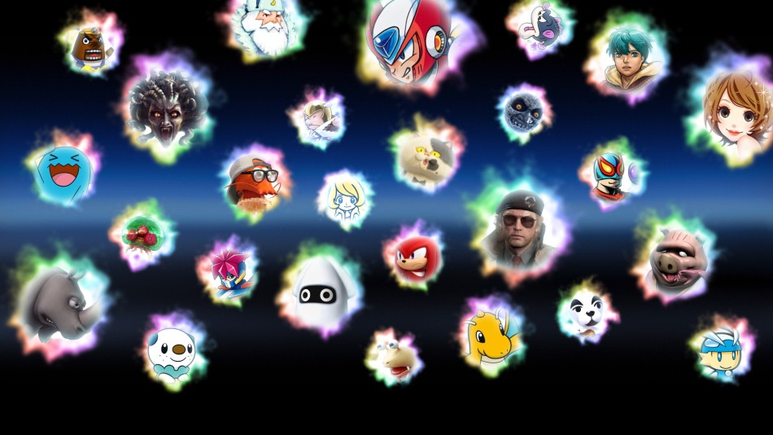
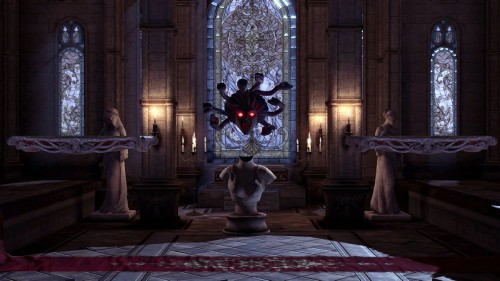
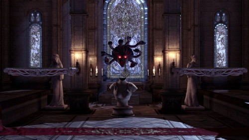

Legendarische gamewerelden en beroemde vechters komen samen in de ultieme showdown: een nieuwe game in de Super Smash Bros.-serie voor de Nintendo Switch!
AankoopmogelijkhedenIedereen is van de partij!
Nieuwe vechters, zoals Inkling uit Splatoon, Ridley uit Metroid, Simon Belmont uit Castlevania en Isabelle uit Animal Crossing, maken hun debuut in de Super Smash Bros.-serie. Ook komen alle Super Smash Bros.-vechters uit de serie terug… ALLEMAAL!
Vechters bekijken3… 2… 1… START!
Lanceer je tegenstanders het level uit in deze ultieme actiegame. Dankzij snellere actie, nieuwe voorwerpen, aanvallen, verdedigingsmogelijkheden, technieken en nog veel meer beleef je een zinderende strijd, of je nu thuis of onderweg bent.
Zo speel je smashPlezier voor iedereen!
Dankzij de verschillende spelstanden en opties kan iedereen de game spelen. Kies in Smash het level, bepaal de regels en ga de strijd aan met tot wel acht spelers tegelijk! Of vorm in Multismash een team van drie of vijf vechters en neem de vechters van het andere team één voor één te grazen! En dat is pas slechts het begin!
Dankzij spirits kun je gevechten organiseren tussen personages uit meer series dan ooit tevoren. Hoeveel kun jij er verzamelen? Vechters kunnen hun krachten bundelen met spirits om nog sterker te worden. Hoofdspirits verbeteren de statistieken van je vechter en hulpspirits geven je vechter extra vaardigheden. Kies je hoofdspirit en hulpspirits en maak je vechter sterker dan ooit!
Spelstanden bekijken '
'
Meer dan 100 levels!
Levels uit eerdere games van de serie zijn verbeterd en elk level heeft een Slagveld- en Ω-versie. Ontdek talloze levelgevaren, inclusief levels die van vorm veranderen en gastpersonages die plotseling verschijnen. Daarnaast kun je met de optie 'Levelwissel' twee levels kiezen die elkaar na een bepaalde tijd automatisch afwisselen.
Per level kun je instellen welke muziek je wilt horen terwijl je de strijd aangaat. Er zijn in totaal meer dan 800 nummers!
Levels bekijken Enkele voorbeelden beluisterenGebruik voorwerpen in je voordeel!
Voorwerpen die in het level verschijnen, kunnen de sleutel tot succes zijn… mits je ze goed gebruikt! Zo kun je met Pokéballen en Meesterballen Pokémon oproepen die je kunnen helpen in de strijd. Ook kunnen gastpersonages je als hulptrofeeën bijstaan!
Voorwerpen, Pokémon en hulptrofeeën bekijkenCompatibel met amiibo
Alle huidige amiibo-figuurtjes (apart verkrijgbaar) uit de Super Smash Bros.-serie worden ondersteund!
Downloadbare content
Er komen meer vechters, levels en nummers naar Super Smash Bros. Ultimate als downloadbare content!
De Fighters Pass geeft je toegang tot vijf Challenger Packs: vijf vechters, vijf levels en al hun bijbehorende nummers. Strijd met nieuwe vechters uit Banjo-Kazooie, DRAGON QUEST, FATAL FURY, Persona 5 en Fire Emblem!
Fighters Pass Vol. 2 is vanaf 29 januari 2020 te koop en geeft toegang tot nog eens zes Challenger Packs zodra ze worden uitgebracht. Elk Challenger Pack bevat één vechter, één level en een reeks muzieknummers. Binnenkort geven we meer informatie!
Je kunt elk Challenger Pack ook los kopen.
Opmerking: de vechters in de Fighters Pass zijn niet inbegrepen in Fighters Pass Vol. 2, en de vechters in Fighters Pass Vol. 2 zijn niet inbegrepen in de Fighters Pass. De eerste Fighters Pass bevat Challenger Packs 1 - 5, en Fighters Pass Vol. 2 bevat Challenger Packs 6 - 11.
Meer info over de Fighters Pass Meer info over Fighters Pass Vol. 2 Meer DLC bekijkenSmash World
Met Smash World, een onderdeel van de smartphone-app van Nintendo Switch Online, kun je heel eenvoudig aanbevolen video's en levels van Super Smash Bros. Ultimate bekijken die door spelers zijn geplaatst.
Als je levels ziet die je cool lijken, hoef je daar alleen maar op te tikken om ze de volgende keer dat je Super Smash Bros. Ultimate opstart te kunnen downloaden. Je kunt ook je spiritteams bekijken of nieuwe teams maken en ze naar je game sturen.
Meer info over Nintendo Switch OnlineKun je maar geen genoeg van Smash krijgen? Ga op zoek naar toernooien bij jou in de buurt of meld je eigen toernooi aan via ons Super Smash Bros. Ultimate-toernooiportaal!
De officiële Super Smash Bros. Ultimate-website bezoekenWat je moet weten
Deze content wordt verkocht door Nintendo of Europe GmbH en moet worden betaald met Nintendo eShop-tegoed dat te gebruiken is via je Nintendo-account. Bij de aankoop van deze content is de Nintendo-accountovereenkomst van kracht.
Om content voor de Wii U of een Nintendo 3DS-systeem te kunnen kopen moet het tegoed dat te gebruiken is via je Nintendo-account, worden samengevoegd met het tegoed dat verbonden is aan je Nintendo Network ID. Als de tegoeden nog niet zijn samengevoegd, dan kun je dit tijdens de aankoop doen. Op het volgende scherm kun je je aankoop bekijken en voltooien.
Nadat je betaling is verwerkt, wordt de content gedownload op het systeem dat is gekoppeld aan je Nintendo-account, of je Nintendo Network ID in het geval van de Wii U of de verschillende Nintendo 3DS-systemen. Op dit systeem moet de nieuwste versie van de systeemsoftware geïnstalleerd zijn. Ook moet het systeem zijn verbonden met het internet en moet de optie om automatisch software te downloaden ingeschakeld zijn. Verder moet er op het systeem genoeg ruimte vrij zijn om de content te kunnen downloaden. Verder moet er op het systeem genoeg ruimte vrij zijn om de content te kunnen downloaden. Afhankelijk van het systeem/hardwaremodel dat je hebt en je gebruik ervan, heb je mogelijk extra opslagmogelijkheden nodig om software te downloaden in de Nintendo eShop. Ga naar Service en info voor meer informatie.
Zorg dat je genoeg vrije ruimte hebt om het downloaden te voltooien.De voorwaarden van de aanbieding worden getoond op basis van de landinstellingen van je Nintendo-account.
Over pre-ordersHet gebruik van ongeoorloofde apparatuur of software die technische modificaties van het Nintendo-systeem of software mogelijk maakt, kan ertoe leiden dat deze software onspeelbaar wordt.
Dit product bevat technische beveiligingsmaatregelen.
Om downloadgames te kopen of demo's en gratis software te downloaden in de Nintendo eShop via de officiële website heb je een Nintendo-account nodig die is gekoppeld aan je Nintendo Switch-systeem. Je moet je systeem hebben geregistreerd als het hoofdsysteem voor jouw Nintendo-account. Dit doe je door de Nintendo eShop minstens één keer te bezoeken op het systeem waarop je de software wilt downloaden. Om automatisch software te downloaden moet je de nieuwste systeemupdate voor je systeem hebben uitgevoerd en de functie voor automatisch downloaden inschakelen. Bovendien heb je genoeg vrije ruimte nodig om het downloaden te voltooien. Ga voor meer informatie naar Service en info. Aankopen en demodownloads die op de website van Nintendo zijn voltooid, worden verwerkt via de Nintendo eShop.
Om online te spelen heb je een internetverbinding nodig. Om onlinediensten te gebruiken moet je een Nintendo-account aanmaken en akkoord gaan met de bijbehorende overeenkomst. Het Nintendo-account-privacybeleid is van toepassing. Sommige onlinediensten zijn mogelijk niet in alle landen beschikbaar. Om online te spelen heb je een betaald online lidmaatschap nodig. Lees meer over betaalde online abonnementen.
Voor de multiplayerstand heeft iedere speler een compatibele controller nodig. Hiervoor heb je mogelijk extra controllers (apart verkrijgbaar) nodig.
© 2018 Nintendo Original Game: © Nintendo / HAL Laboratory, Inc. Characters: © Nintendo / HAL Laboratory, Inc. / Pokémon. / Creatures Inc. / GAME FREAK inc. / SHIGESATO ITOI / APE inc. / INTELLIGENT SYSTEMS / Konami Digital Entertainment / SEGA / CAPCOM CO., LTD. / BANDAI NAMCO Entertainment Inc. / MONOLITHSOFT / CAPCOM U.S.A., INC. / SQUARE ENIX CO., LTD. / ATLUS / Microsoft / SNK CORPORATION.
 Facebook
Facebook
 Twitter
Twitter